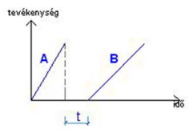
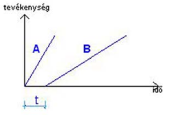
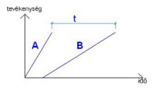
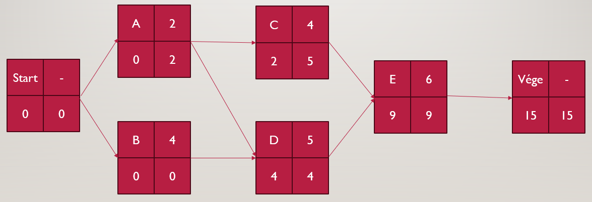

Hálótervezés (MPM)
Az MPM (Metra Potential Method) Hálóról
A háló egyik jellemzője, hogy tevékenység-csomópontú, legfontosabb elemei a csomóponthoz rendelt tevékenységek és az éleken jelölt kapcsolatok. A tevékenységek közötti élek nyíllal irányítottak, a kapcsolatot a nyilakon tüntetjük fel.
Kapcsolatok
- Vége – Kezdet kapcsolat (VK(t)): Azt fejezi ki, hogy a követő tevékenység mennyivel később kezdődjön el az előző tevékenység végéhez képest. Ezt a minimálisan betartandó időt (t) írjuk a VK rövidítés után.

- Kezdet – Kezdet kapcsolat (KK(t)): Jellemzője, hogy a követő tevékenység kezdetét a megelőző tevékenység kezdetéhez viszonyítják, és az így megadott idő (t) a kezdőpontok közötti minimális követési távolságot adja meg.

- Vége – Vége kapcsolat (VV(t)): Jellemzője, hogy a tevékenységek befejezése közötti időminimumot adják meg, azaz hogy a követő tevékenység befejezése és a megelőző tevékenység befejezése között legalább mennyi idő teljen el.

MPM háló készítése - Tevékenységtáblázat
